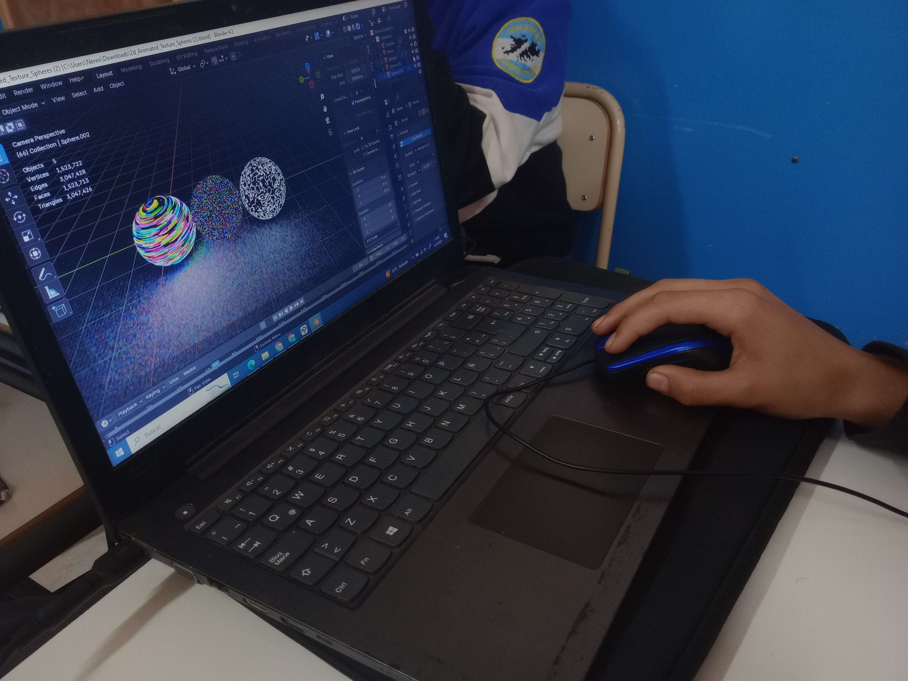

Atomolograma 3D

Holograma

¿Qué es un holograma?
Los hologramas de átomos son una representación tridimensional de la estructura atómica de un material, creada utilizando técnicas de holografía.
Este método permite registrar la información de una onda luminosa que ha interactuado con un objeto, en este caso, los átomos.
Un holograma es una imagen tridimensional (3D) que se crea a partir de una ilusión óptica. Mediante la reflexión de la luz, nuestro cerebro la percibe y la visualiza como un objeto tridimensional.
Para generar estos modelos tridimensionales de átomos, se emplean técnicas avanzadas como la microscopía electrónica de transmisión o la difracción de rayos X, las cuales permiten obtener información detallada sobre la posición y disposición de los átomos en un material.
Atomolograma 3D
El proyecto "Atomolograma 3D" consiste en la creación de representaciones gráficas de diferentes modelos atómicos, capaces de proyectarse sobre una cuadrícula de vidrio transparente, logrando así el efecto tridimensional. En el marco del espacio curricular de Química, los estudiantes de 6to año de la escuela experimental ProA La Falda representaron modelos atómicos utilizando estas técnicas, creando ellos mismos las proyecciones tridimensionales.
 Modelos Atómicos
Modelos Atómicos
Modelos Atómicos

Jhon Dalton
A principios del siglo XIX, John Dalton propuso que la materia está compuesta por átomos, que son partículas indivisibles y únicas para cada elemento.
Este fue el primer modelo atómico basado en evidencias experimentales y marcó el inicio de la teoría atómica moderna.
J.J THOMSON
Modelo del budín de pasas (Thomson): Joseph John Thompson sugirió este modelo en 1897 tras su descubrimiento del electrón mediante experimentos con rayos catódicos.
En este modelo, el átomo se visualizaba como una esfera con carga positiva en la que estaban incrustados electrones negativos, similar a un “budín” con “pasas”.

Rutherford
Este modelo de 1911 nos describe al átomo como un núcleo central pequeño con carga positiva rodeado por órbitas circulares en donde se encuentran los electrones con carga negativa.
Este modelo surge después del famoso experimento de la lámina de oro bombardeada por rayos catódicos, demostrando que el átomo en su mayoría está vacío.
Niels Bohr
Propuesto en 1913, este modelo atómico nos describe la posición de los electrones en órbitas alrededor del núcleo.
Este modelo introduce la idea de que los electrones ocupan niveles de energía específicos y cuantizados. También nos dice que los electrones pueden saltar entre estos niveles emitiendo o absorbiendo radiación en el proceso.

E. Schrödinger
Desarrollado en 1926, el físico nos dice que los electrones son una onda de probabilidad y no lugares específicos.
Este modelo se basa en la dualidad onda-partícula, lo que significa que los electrones pueden comportarse tanto como partículas como ondas. En este modelo se descarta la órbita y se introduce el término "orbital". La ecuación de Schrödinger permite calcular estas probabilidades y predecir la distribución de los electrones alrededor del núcleo.
Hologramas: Modelos Atómicos
En el marco del espacio curricular de Química, los estudiantes de 6to año de la escuela experimental ProA La Falda representaron modelos atómicos utilizando las técnicas mencionadas, creando ellos mismos las proyecciones tridimensionales.
Carpeta de campo
Explora la "Carpeta de Campo," donde se documenta detalladamente todo el proceso de desarrollo y ejecución del proyecto. En esta sección, encontrarás información completa sobre la creación y las pruebas realizadas.
Contenido de esta sección:
- Documentación del Proyecto: Informe sobre el diseño, desarrollo y pruebas.
- Registros de Campo: Datos y observaciones obtenidas durante las fases de implementación y evaluación.